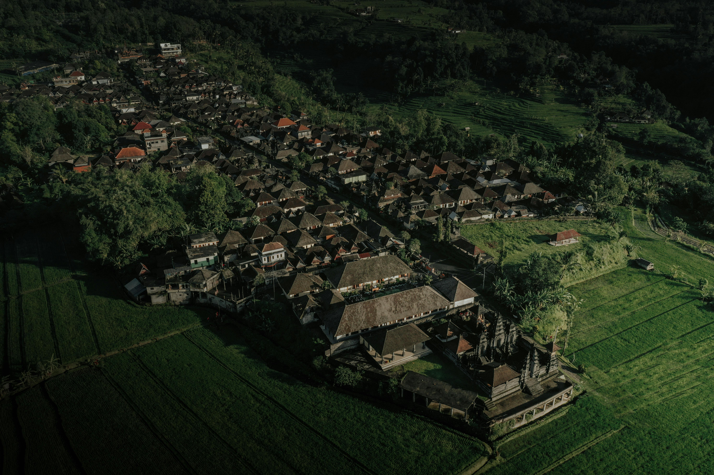
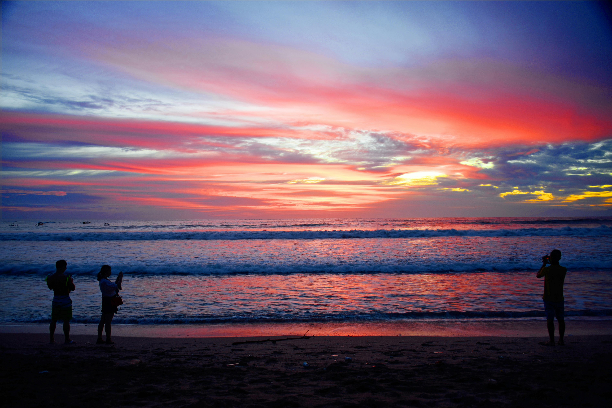
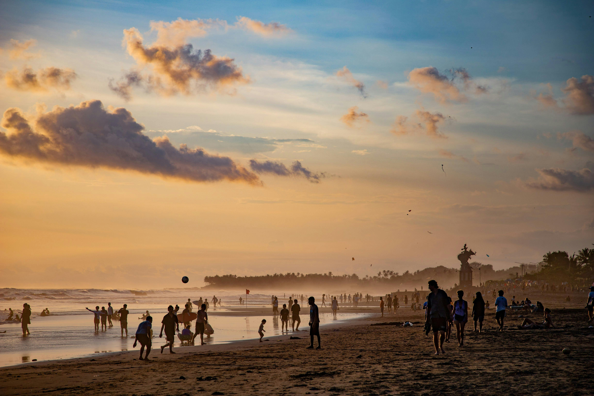

Top Destinations
Ubud
Ubud is often considered the cultural heart of Bali. The town is located in the uplands and is known for its traditional crafts and dance. It's surrounded by rainforest and terraced rice paddies, dotted with Hindu temples and shrines, including the famous Ubud Monkey Forest.
- Known for: Cultural Hub
- Main attractions: Ubud Monkey Forest, Tegallalang Rice Terrace
Kuta
Kuta is famous for its long sandy beach, great surf, and vibrant nightlife. It has a more modern feel compared to other parts of Bali, with numerous bars, restaurants, and shops. It's a popular spot for tourists looking to experience Bali's beach culture.
- Known for: Beaches and Nightlife
- Main attractions: Kuta Beach, Waterbom Bali
Seminyak
Seminyak is known for its luxury resorts, high-end shopping, and fine dining. The area has a more sophisticated atmosphere compared to Kuta, with upscale beach clubs and vibrant nightlife. It's the perfect destination for travelers looking for a mix of relaxation and entertainment.
- Known for: Luxury Resorts and Shopping
- Main attractions: Seminyak Beach, Oberoi Street
Travel Tips
- Best time to visit: April to October
- Language: Balinese and Indonesian
- Currency: Indonesian Rupiah (IDR)
- Transportation: Rent a scooter or hire a private driver
Local Cuisine
Don't miss out on trying these local dishes:
- Nasi Goreng: Indonesian fried rice
- Sate: Grilled meat skewers
- Babi Guling: Suckling pig